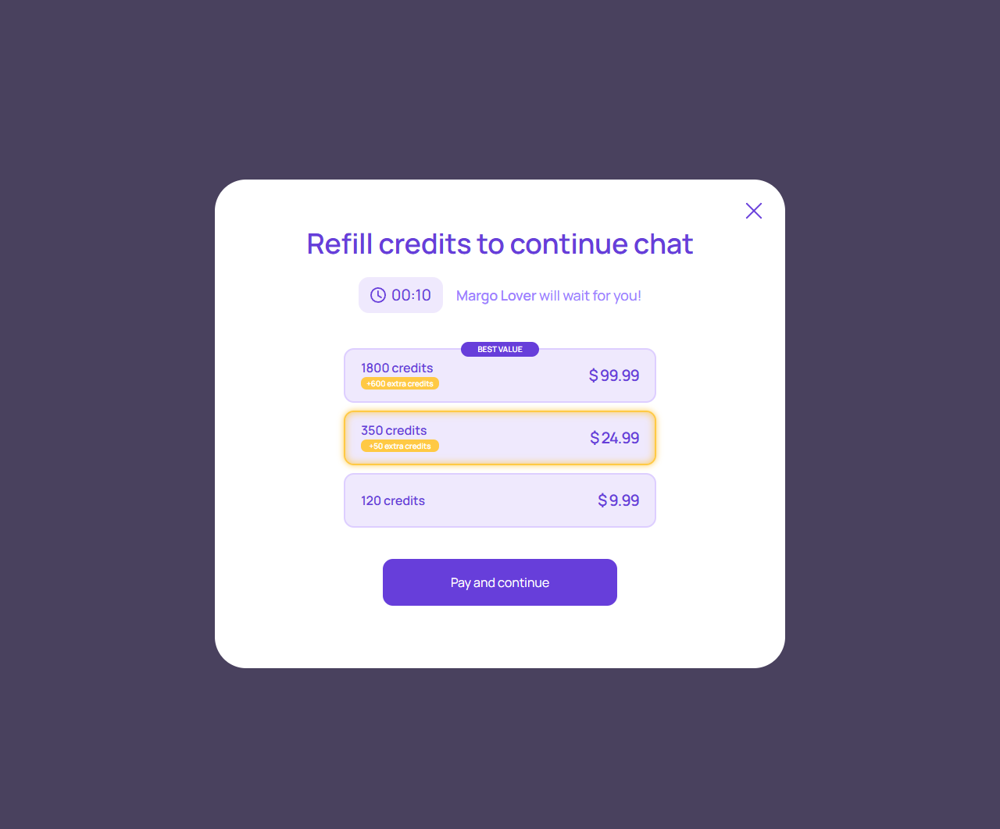
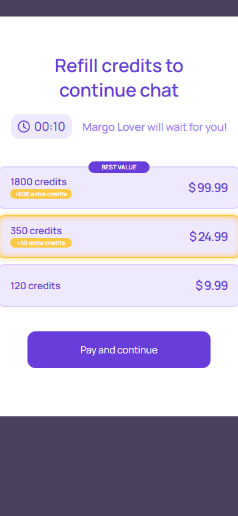

Пополнение для продолжения
account/top-up-to-continue.html
Выбрать пакет пополнения без потери диалога.
| Когда открывается | Приостановленная консультация без средств |
|---|---|
| Данные | packageId/version; credits/bonus; amount/currency; eligibility; return context. |
| Сценарий | Выбрать пакет → Pay and continue → order review → платеж → прежний контекст. |
| Переходы | Проверка заказа |
Цены и бонусы на снимке демонстрационные; не переносить в seed/тарифы.
Общая и предметная логика. Снимки и подписи элементов — исходная редакция макета; поздние уточнения ТЗ имеют приоритет в своей области. Это не проверка текущего сайта.
Состояние 1280 · 1280 × 1062


Элементы и ожидаемые действия
| Элемент | Название в макете | Действие | Ожидаемый результат |
|---|---|---|---|
| E001 Скрыт в этом состоянии | Paused consultation funding status | Информационный блок/область фокуса, не самостоятельная команда. | Показывать актуальные данные соответствующего сценария; фокус или чтение не выполняют мутацию. |
| E002 Виден | Close top up selection | Закрыть локальное окно или вернуться к инициатору; Stay отменяет намерение завершить. | Вернуть фокус и исходный контекст. Не выполнять оплату, удаление или Complete. При неизвестном результате платежа сначала сверить заказ. |
| E003 Виден | 1800 credits +600 extra credits $ 99.99 | Выбрать пакет из актуального серверного каталога. | Зафиксировать packageId/version; цена/бонус/валюта на проверке заказа совпадают с выбором. Цифры снимка не утверждены. |
| E004 Виден | 350 credits +50 extra credits $ 24.99 | Выбрать пакет из актуального серверного каталога. | Зафиксировать packageId/version; цена/бонус/валюта на проверке заказа совпадают с выбором. Цифры снимка не утверждены. |
| E005 Виден | 120 credits $ 9.99 | Выбрать пакет из актуального серверного каталога. | Зафиксировать packageId/version; цена/бонус/валюта на проверке заказа совпадают с выбором. Цифры снимка не утверждены. |
| E006 Виден | Pay and continue | Подтвердить текущий пакет/заказ по сценарию «Пополнение для продолжения». | Одна попытка платежа; pending/success/failure различаются. Success только по серверу. Пополнение не запускает консультацию. |
Состояние 390 · 390 × 844


Элементы и ожидаемые действия
| Элемент | Название в макете | Действие | Ожидаемый результат |
|---|---|---|---|
| E001 Скрыт в этом состоянии | Paused consultation funding status | Информационный блок/область фокуса, не самостоятельная команда. | Показывать актуальные данные соответствующего сценария; фокус или чтение не выполняют мутацию. |
| E002 Виден | Close top up selection | Закрыть локальное окно или вернуться к инициатору; Stay отменяет намерение завершить. | Вернуть фокус и исходный контекст. Не выполнять оплату, удаление или Complete. При неизвестном результате платежа сначала сверить заказ. |
| E003 Виден | 1800 credits +600 extra credits $ 99.99 | Выбрать пакет из актуального серверного каталога. | Зафиксировать packageId/version; цена/бонус/валюта на проверке заказа совпадают с выбором. Цифры снимка не утверждены. |
| E004 Виден | 350 credits +50 extra credits $ 24.99 | Выбрать пакет из актуального серверного каталога. | Зафиксировать packageId/version; цена/бонус/валюта на проверке заказа совпадают с выбором. Цифры снимка не утверждены. |
| E005 Виден | 120 credits $ 9.99 | Выбрать пакет из актуального серверного каталога. | Зафиксировать packageId/version; цена/бонус/валюта на проверке заказа совпадают с выбором. Цифры снимка не утверждены. |
| E006 Виден | Pay and continue | Подтвердить текущий пакет/заказ по сценарию «Пополнение для продолжения». | Одна попытка платежа; pending/success/failure различаются. Success только по серверу. Пополнение не запускает консультацию. |